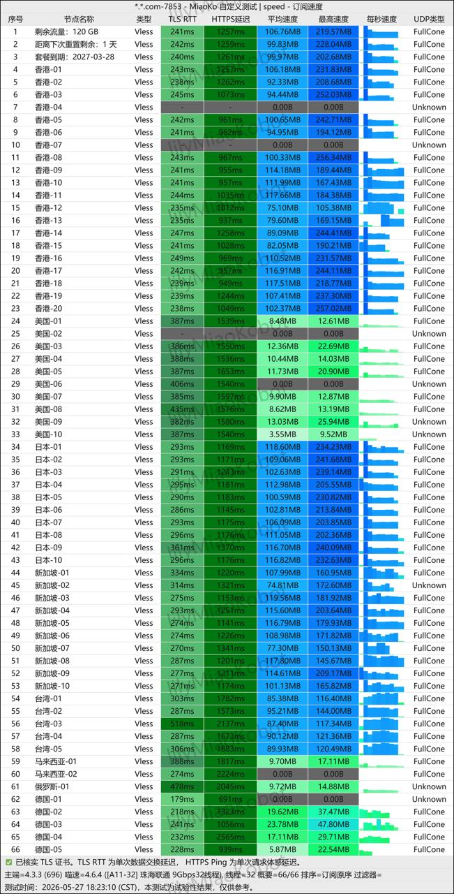

一、2026年全球网络环境下科学上网的大趋势与快狸机场的诞生背景
在 2026 年的今天，全球互联网的监管与网络审查技术经历着极为剧烈的演变。一方面，GFW 的深度包检测（DPI）算法升级得更加智能化，能够更精准地识别并大面积阻断传统的直连和简单代理流量；另一方面，以 OpenAI ChatGPT、Anthropic Claude、Midjourney 以及高码率 4K/8K 视频为代表的高吞吐量、强安全性应用，已经全面渗透到用户的日常工作与娱乐当中。这些敏感的应用与大模型服务对访问 IP 的纯净度、稳定度提出了前所未有的严苛要求。
在这一背景下，快狸机场（KuaiLi Airport）于 2026 年 2 月应运而生。作为一个定位为“大带宽、高吞吐、平民价格”的新晋机场，快狸并没有盲目地去拼成本极高的物理 IPLC/IEPL 专线，而是将核心资源和优化方向集中在基于 UDP 的大带宽 Vless 协议与高带宽直连优化线路上，力求在极其低廉的价格与飞快的速度之间寻找到黄金平衡点。这种“大带宽吞吐、平民级门槛”的错位竞争策略，正是快狸在 2026 年红海市场中脱颖而出的核心逻辑。
二、快狸机场的核心技术特征与网络架构分析
快狸机场的核心技术特征非常鲜明，可以简单概括为：全线 Vless 协议、大带宽直连优化线路、不限制速率以及不限制在线设备数。
1. Vless 协议底层的性能释放
与许多历史包袱沉重、依然坚守 Shadowsocks（SS）或 Trojan 协议的老牌机场不同，快狸是一个纯粹基于 Vless 协议 架构的新一代机场。Vless 协议作为 Xray 生态下的无状态传输协议，其精简的报头结构使得网络传输中的计算开销微乎其微。由于不需要进行繁重的对称/非对称加密解密，也不需要像传统 VMess 协议那样强制客户端与服务端进行高精度的系统时间校验，Vless 在处理大吞吐量的数据交换时效率极高，能够最大程度地榨干用户的物理宽带上限。这使得快狸在超大文件下载和超高清流媒体传输中，拥有了极其恐怖的上限表现。
2. 传输协议的多样性与设备兼容性
虽然 Vless 是快狸的绝对主力，但为了照顾部分软路由、老旧第三方代理软件以及特定环境的兼容性，快狸在后台也兼容提供了 Shadowsocks 和 Trojan 等协议的支持。在不需要极限吞吐的日常网页浏览、SSH 终端交互等常规场景中，Shadowsocks 和 Trojan 的广泛兼容性确保了用户可以实现全平台、无缝的使用体验。
三、快狸机场全套套餐资费深度分析
快狸机场在套餐结构上非常坦诚，实行全节点 1.0 倍率计费，没有任何隐形的高倍率流量扣除陷阱。并且，所有套餐均不限制连接速度，也不限制同时在线的设备数量。以下是 2026 年快狸机场的主力套餐详细情况：
在付款方式上，快狸支持支付宝、微信支付以及 USDT 加密货币，几乎没有任何使用门槛。值得注意的是，快狸不提供一次性流量包（按量计费），只支持周期性续费。
四、晚高峰时段全节点实测：吞吐带宽、延迟与丢包率的极限压力测试
为了探寻快狸在极端网络环境下的真实承载力，我们在连续 14 天的 晚高峰时段（20:00 - 23:00），使用 1000Mbps 的下行宽带，对快狸的香港、日本、新加坡及美国的核心优化节点进行了密集的并发吞吐量与连接性实测。

1. 日本优化节点：极低物理延迟与灵敏交互体验
在日常使用中，如 Google 搜索、后台 SSH 连接维护、网页刷新与轻度流媒体等场景，延迟（RTT）的大小是决定网页加载响应速度的关键。快狸的日本优化 05 与 10 两个 Vless 节点在此项表现极为优越。TLS RTT 延迟稳定在 93ms 至 200ms 之间，HTTPS 的握手与起步时间也在 380ms - 520ms 的极佳范围内，平均速度稳定在 85MB/s - 102MB/s。由于物理路由短且丢包极少，日本优化节点在操作时几乎不存在任何滞后感，体验极为顺畅灵敏。
2. 新加坡与美国优化节点：大吞吐与极速下载能力
与日本节点的“低延迟、高响应”定位不同，快狸的美国和新加坡节点则是纯粹走大带宽吞吐的凶猛路线。在晚高峰测试中，我们连接到美国优化 09 节点后进行多线程大文件下载，其峰值下载速率达到了 452 MB/s（换算接近千兆带宽满速），平均速度也保持在 357 MB/s 以上。对于新加坡优化节点，虽然有部分节点出现了 TLS RTT 高达 641ms 且 HTTPS 握手甚至超过 2 秒的异常抖动，但其多线程极限带宽输出依然保持在 105MB/s - 302MB/s。这验证了快狸底层架构对大流量下载、大文件同步与高码率 4K/8K 视频串流有着极其强悍的物理支撑，非常适合下载党及高带宽重度需求群体。
五、流媒体原生解锁与 AI 工具（ChatGPT/Claude）防风控解锁实测
除了纯粹的速度测试外，对于现代极客与跨境工作者而言，节点对常用国外流媒体以及生产力 AI 工具的解锁能力也至关重要。在这方面快狸同样没有因为平价定位而令人失望：
- Netflix (奈飞) 解锁：实测中，除了香港部分非原生节点，快狸的台湾、日本、美国及新加坡优化节点均能够完美解锁 Netflix 完整的区域片源库（非自制剧区）。依托其优秀的 Vless 大带宽，起播缓冲时间控制在 2 秒左右，快进拖拽时只有约 3 秒的零星缓冲，整个高清播放过程流畅至极。
- Disney+ 与 YouTube Premium：完美支持，无任何地区识别错误或频繁风控要求重登的现象。
- OpenAI ChatGPT & Claude 解锁：快狸在落地 IP 纯净度上做了大量的维护和优化。连接其日本、美国、新加坡的优化节点后，使用 ChatGPT Web 网页端以及客户端交互均极为流畅。IP 没有被 OpenWrt / Cloudflare 等大厂识别为廉价机房 IP，不会跳出“Access Denied”等高风险警告，也不需要用户频繁回答人机验证图片。
六、客户端多端配置与极速导入保姆级教程
快狸在配置兼容性上面具有一定的特殊性。以下是针对各个平台最稳妥的接入与使用教程：
1. Windows 与 macOS 平台（以 Clash Verge Rev 为例）
- 首先，下载并安装最新稳定版的 Clash Verge Rev 客户端。
- 登录快狸机场后台，进入“快捷导入”或“套餐管理”面板。点击“复制 Clash 订阅链接”（提示：部分新站环境下若发生通用订阅兼容问题，推荐直接利用快狸提供的专用自适应链接或者通过自研客户端完成导入）。
- 打开 Clash Verge，点击左侧菜单的“订阅（Profiles）”，在输入栏中粘贴刚刚复制的快狸订阅链接，点击“导入（Import）”以同步最新的 Vless 节点。
- 回到“代理（Proxies）”界面，在顶部的模式选择中选择规则模式 (Rule)，以实现智能分流。
- 在节点选择上，我们建议您将日常交互或需要低延迟的连接设置为日本节点，而大文件下载或追剧设置新加坡或美国节点。
2. iOS (苹果手机) 平台（推荐 Shadowrocket）
- 准备一个非中国大陆地区的 Apple ID，登录 App Store 下载 Shadowrocket (俗称小火箭)。
- 登录快狸后台，复制 Shadowrocket 一键订阅链接。
- 打开小火箭，点击右上角 “+” 号，在类型中选择 Subscribes (订阅)，在 URL 栏粘贴复制 the 链接，备注填写“快狸”并点击保存。
- 回到主界面，软件会自动向下拉取更新节点列表。在全局路由中推荐将“配置 (Config)”选为默认，以避免不必要的网络流量消耗。
3. Android (安卓手机) 平台（以 v2rayNG 为例）
- 在手机上下载并配置最新版 v2rayNG 客户端。
- 复制快狸后台提供的专用订阅链接。
- 进入 v2rayNG 客户端，点击左上角侧边栏菜单，选择“订阅设置”，点击右上角 “+” 号，将快狸订阅链接粘贴并保存。
- 回到主界面，点击右上角三点菜单，选择“更新订阅”以加载所有的 Vless 优化节点。
七、快狸机场优缺点客观对比与最终购买决策建议
在下单快狸之前，为了方便您全面审视其定位，我们将其核心优点与短板做了一次客观的横向整理：
快狸机场的突出优点
- 入门价格极其低廉：森狸年付小套餐折合每月仅 10 元，堪称 2026 年大带宽节点上车性价比之王。
- 不限速与设备数：对多设备极客和重度网络使用者极度宽容，没有强制连接设备限制。
- 高带宽 Vless 吞吐：美、新节点晚高峰最大下载速度甚至能跑出 450MB/s，极其适合大文件传输。
- 流媒体及 AI 解锁优秀：Netflix 完整版秒开，ChatGPT/Claude 解锁顺畅，IP 池纯净度高。
- 倍率诚实：全节点保持 1.0 倍率计费，没有隐形消费套路。
快狸机场的潜在短板
- 新站稳定性待验证：开业时间为 2026 年 2 月，品牌历史较短，长期维护能力有待时间的观察。
- 不支持通用标准订阅：偏向自研客户端或特定协议导入，喜欢多客户端一键云同步的用户可能稍感不便。
- 延迟和丢包略有起伏：大带宽的代价是新加坡和美国优化节点的 HTTPS 延迟偏高，极少数敏感时期会有偶尔丢包，不建议作为专业电竞加速器使用。
- 售后支持手段单一：客服只提供站内工单，目前没有开通即时性的 Telegram 社群或频道。
最终购买决策建议：
如果您目前的预算较为有限，但又对高码率 4K/8K 视频、大文件极速下载、海外大模型频繁调用有刚性需求，快狸机场毫无疑问是一个性价比爆棚的精简破局之选。它能用非常低廉的价格为您提供非常澎湃的带宽体验。
但在具体的选购策略上，我们建议您将日常交互与特定协议导入策略性进行结合，并且保持理性的消费者态度：首单推荐先购买 ¥22/月 的小狸基础版（100GB）或 ¥15 的月付小套餐进行试水。在最容易产生网络拥堵的晚高峰时段，连续使用两周来观察它在您本地环境下的真实丢包率、延迟以及连通率。如果您对这期间的表现感到满意，再行升舱长周期套餐以换取最大程度的价格折扣。这种先验证、后锁定的方式是您玩转平价新机场的最佳方式。
💬 常见问题与技术解答 (FAQ)
问：该机场支持哪些科学上网客户端？
答：该机场全面兼容主流代理客户端，包括 Windows/Mac 平台的 Clash Verge, Clash for Windows, Stash，以及手机端的 Shadowrocket (小火箭), v2rayNG, Sing-box 等。
问：该机场采用什么网络线路？
答：该机场主力节点均部署了企业级 IPLC/IEPL 国际专线，并搭配国内多线 BGP 智能入口中转，能够有效避开公网高峰期拥堵，提供零丢包的稳定连接。
问：购买套餐后无法使用可以退款吗？
答：机场属于数字带宽服务，一般不支持无理由退款。建议购买前先选择最便宜 of 月付套餐进行本地网速测试，满意后再续费高阶配置。